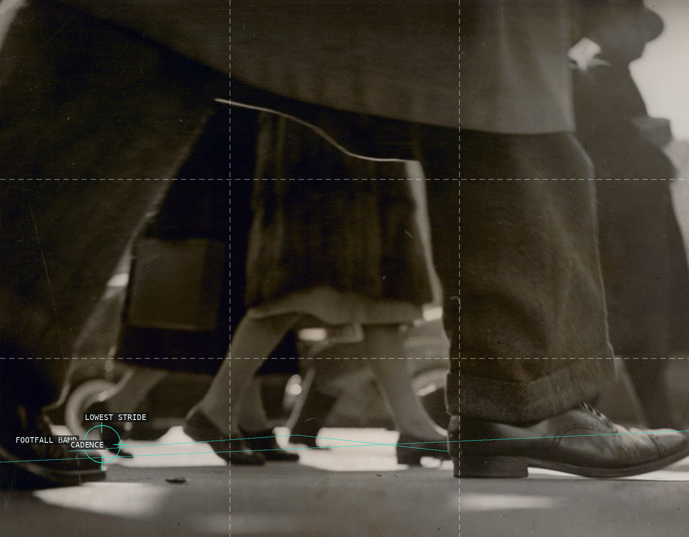
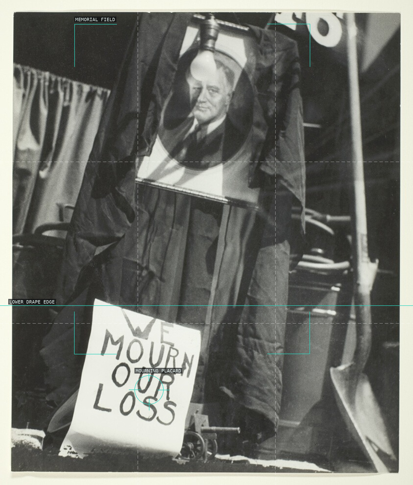
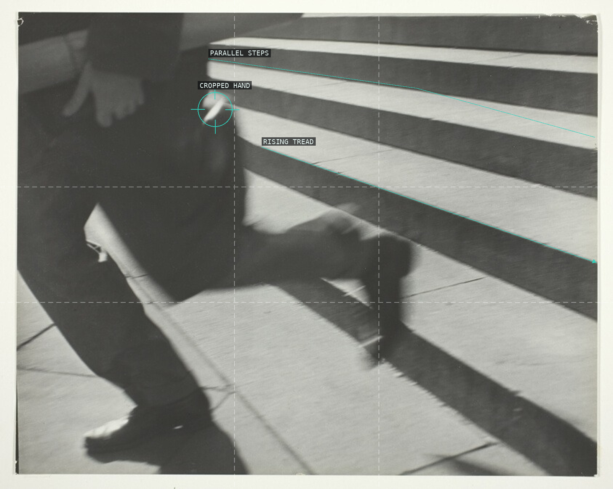
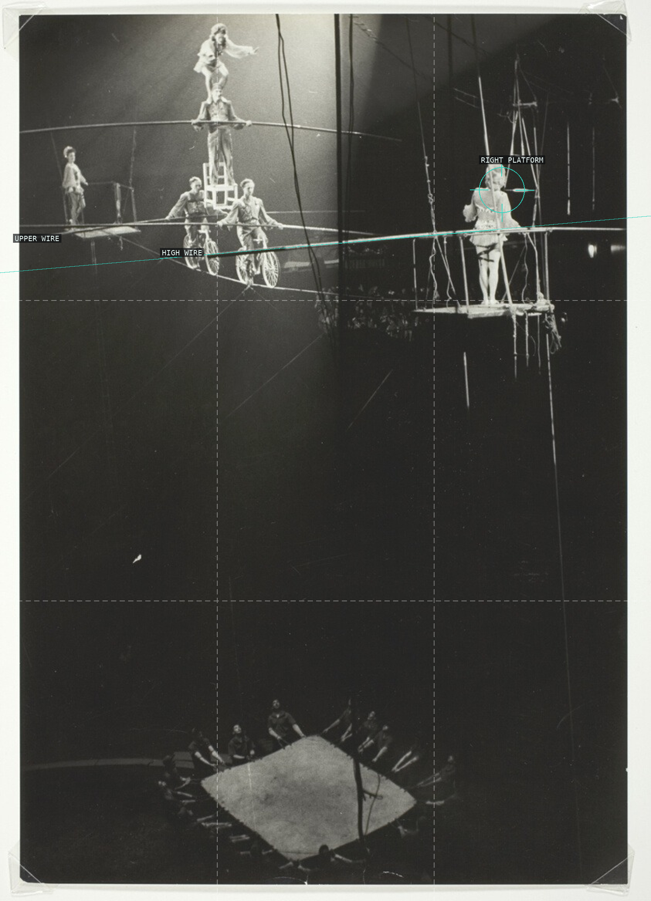
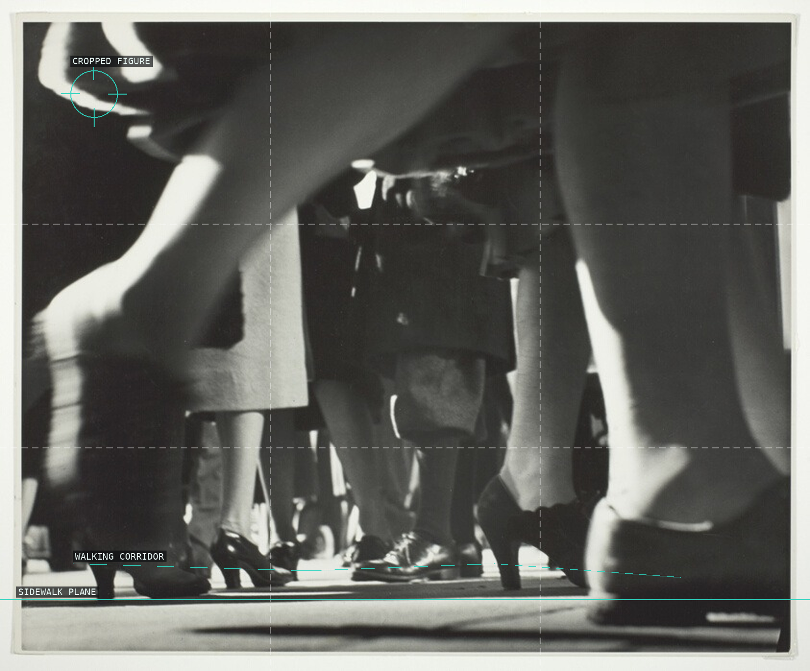
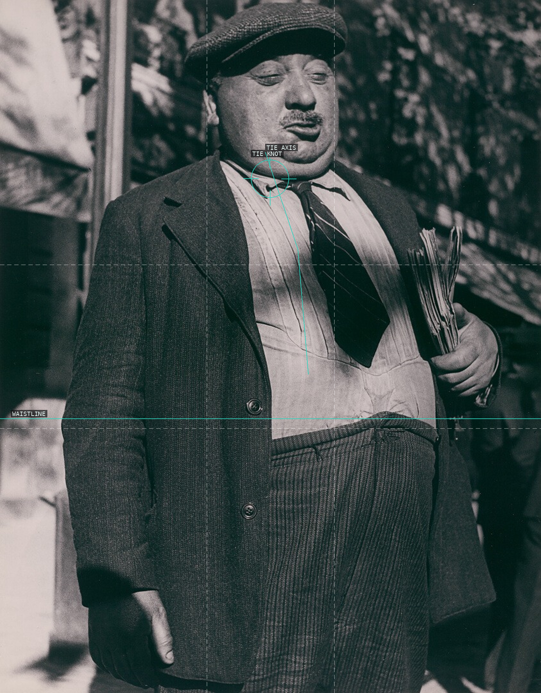

Lisette Model — composition-overlay proofs

Running Legs, 1940–41

We Mourn Our Loss, 1945

Running Legs, New York Public Library, 1940

Circus, The Wallendas, New York City, 1950

Running Legs, 1940/41

Man with Newspaper, Paris, 1938